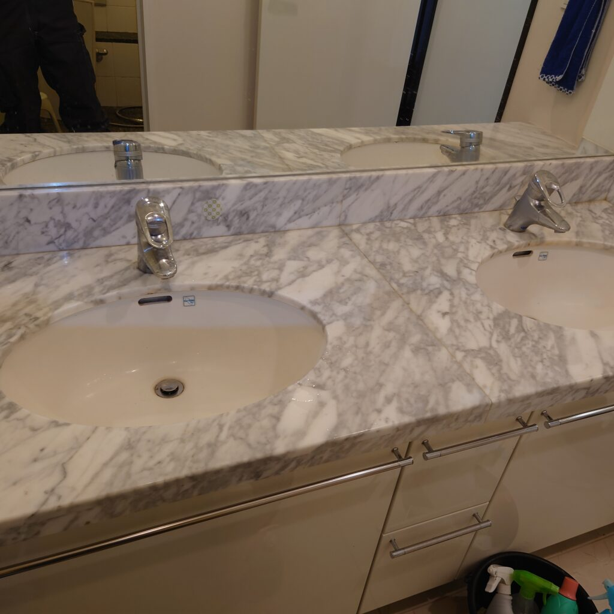
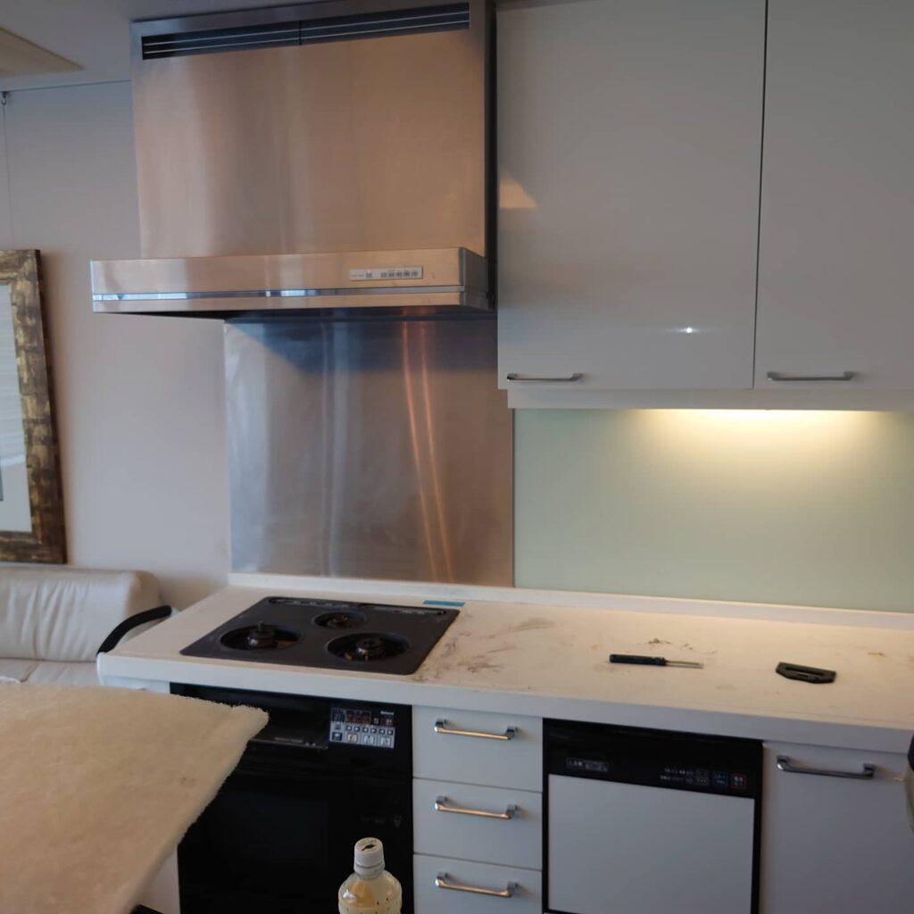
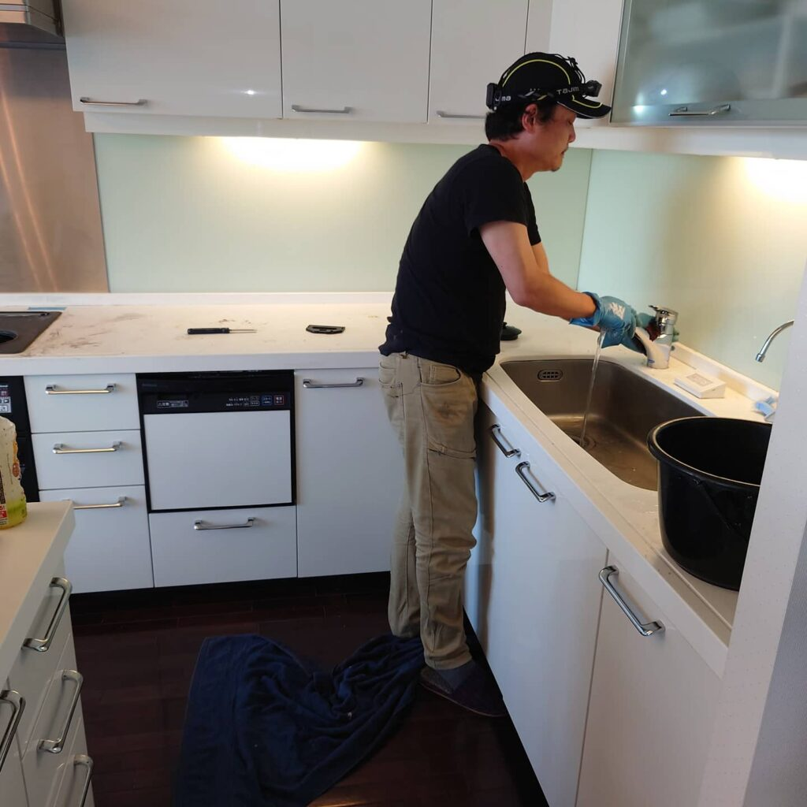
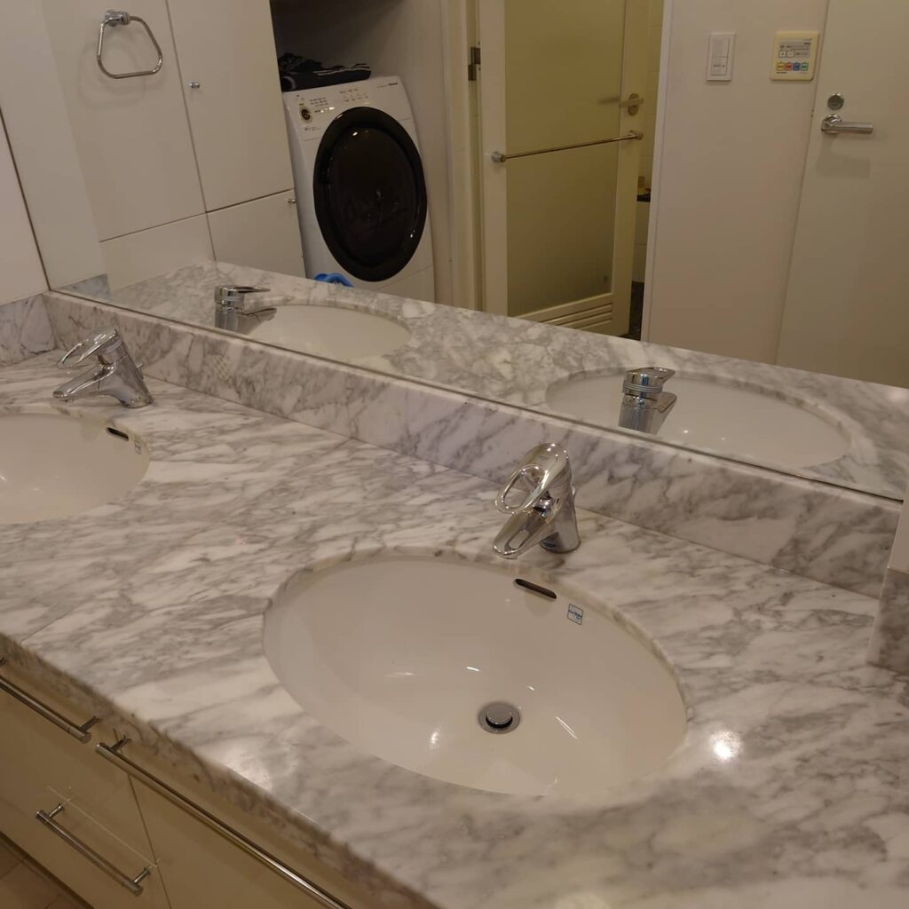
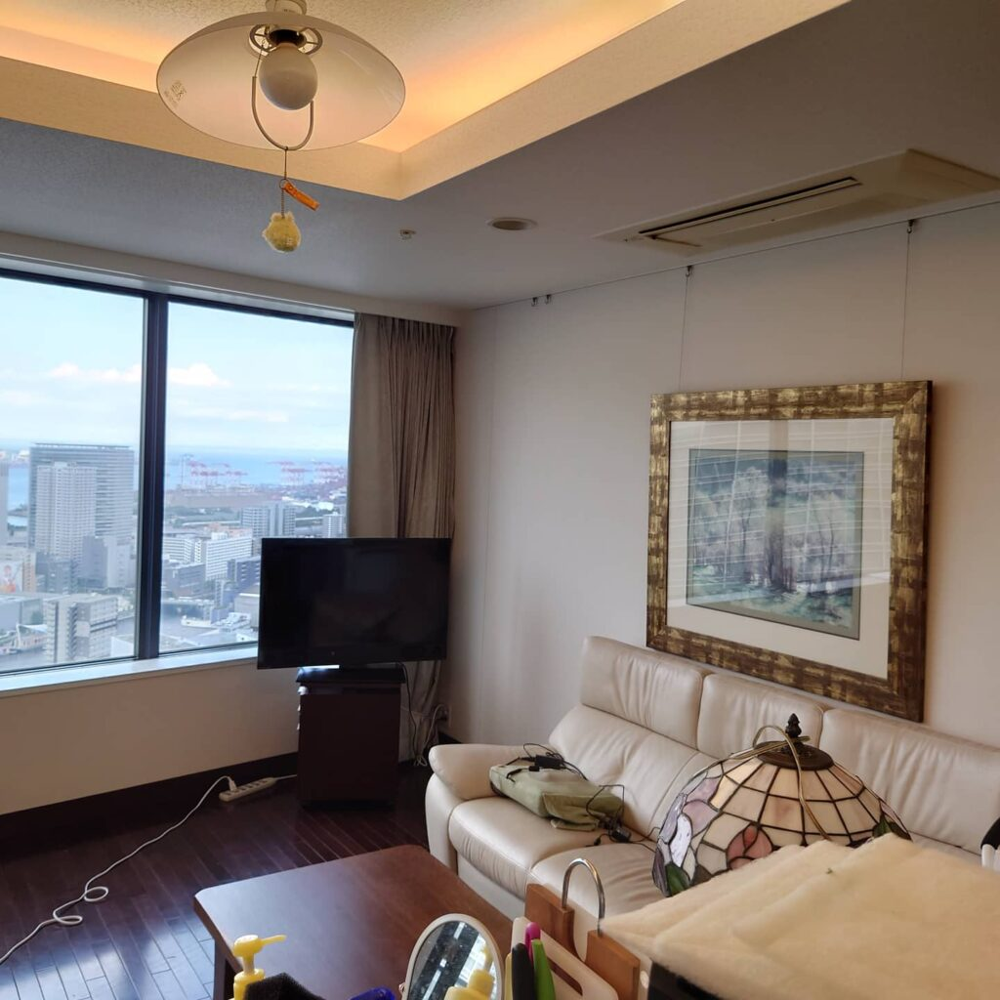
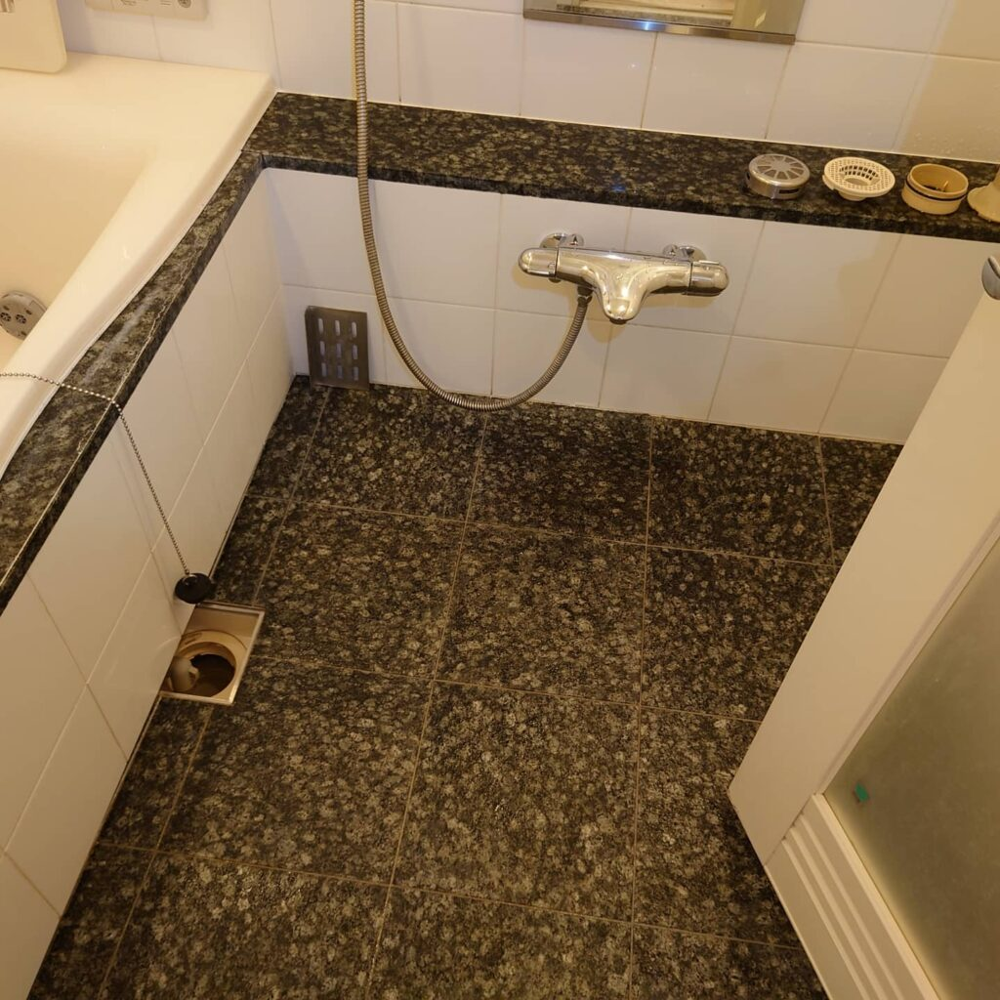
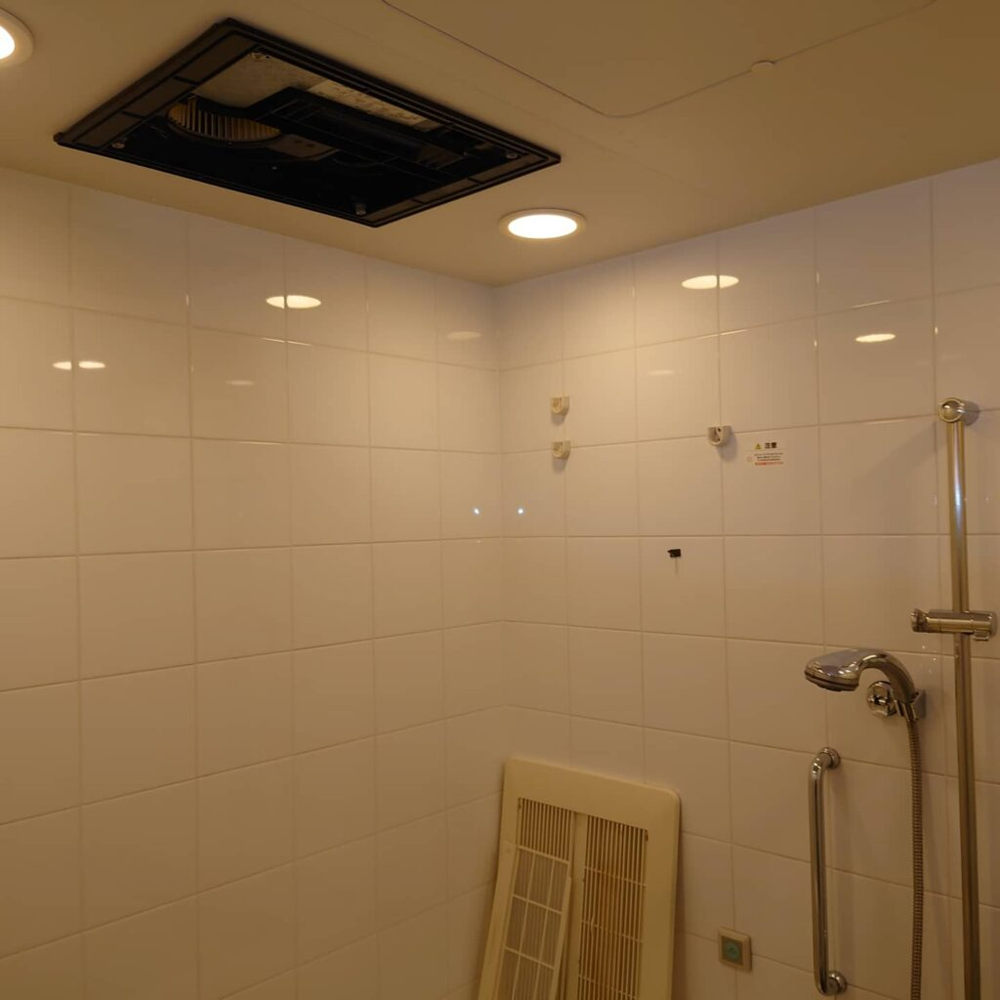
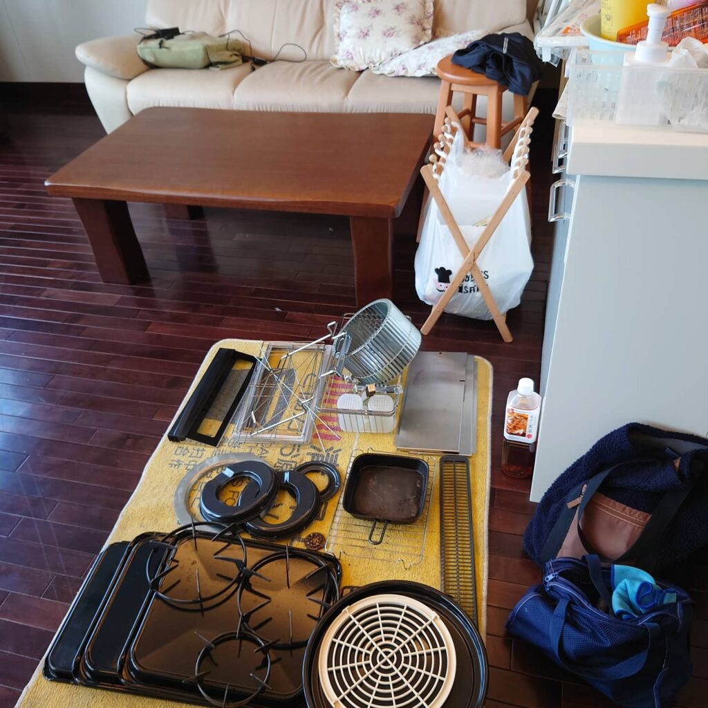

港区ウオーターフロントのタワーマンションのお客様の水回りクリーニングをしました。

港区の海が目の前に広がるタワーマンションのお客様の水回りクリーニングをしました。高層階からのレインボーブリッジやお台場の景色、通りかかる大型貨物船など素晴らしい眺望で見とれてしまいました。
タワーマンションのお客様のハウスクリーニング、水回りクリーニングを多数実施しております。多くのタワーマンション様はセキュリティチェックが堅牢で、お部屋に辿り着く迄に複数回のオートロッククリアが必要な場合が多いです。作業車を停めるスペースが借りられない場合の、近隣コインパーキングの確保も多少難易度が高く、予約時間より30分前に到着しても時間ギリギリの場合が多いです。タワーマンションのお客様の場合、開始時間と終了時間に少し多めに余裕を計算して早めの行動を心掛けております!







